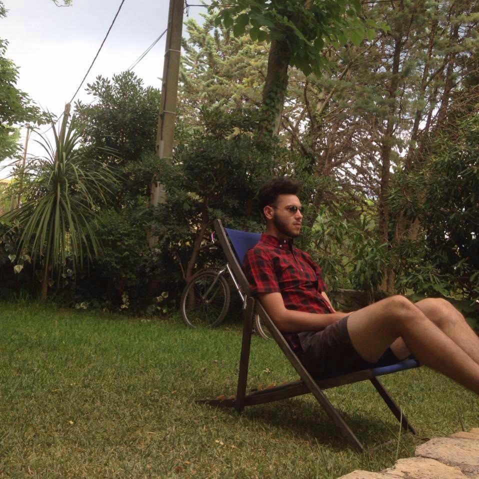

AUXANN CHERRIERE

Summary
Hardworking and passionate job seeker with strong organizational and team
working skills. Ready to help you achieve your company goals.
Education
- Approved manager
- RSA, responsible service alcohol
- ITM International massage school
- Chiang Mai Thailand, 15/2023
Work history
Walkabout hotel - Bar/Resataurant Manager
Port Hedland • 11/2022 - 10/2023
- Contributed to a positive team atmosphere, collaborating with colleagues
to ensure smooth operations during peak hours
- Managed daily cash flow
- Handled guest complaints professionally, resolving issues quickly to
maintain positive customer experiences.
- Coordinated successful private events such as corporate functions,
holiday parties, and special occasions which led to increased bookings.
- Correctly calculated inventory and ordered appropriate supplies.
Skills
- Ordering
- Cah handlinh
- Team worker
- Adaptable
About / Contact